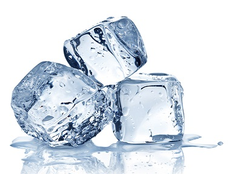

Whitecap Rafting
Book your action packed adventure today at the Whitecap Rafting website!

ICE Projects
ICE stands for in-class-projects. Here you can find many of the projects that we have completed in class together!
Future Projects
Future projects to come soon! That's all for now!